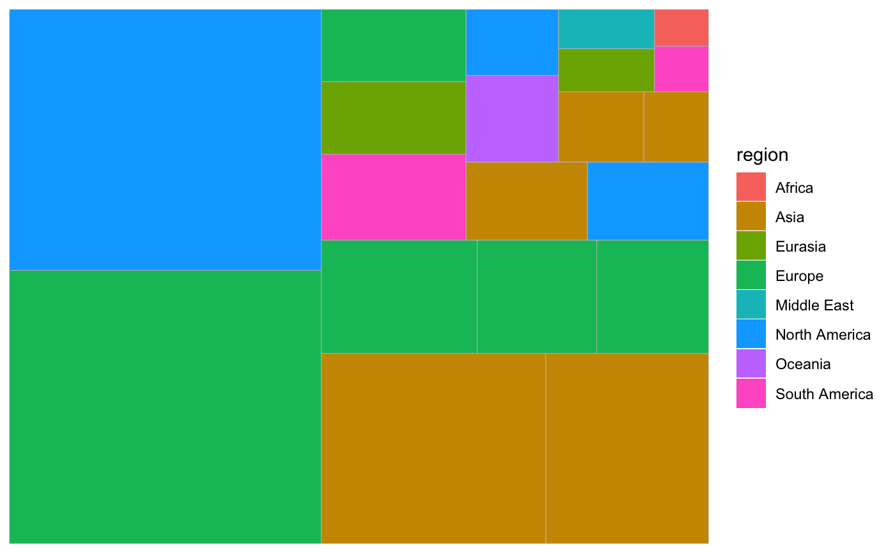

A treemap is a rectangular plot divided into tiles, each of which represents a single observation. The relative area of each tile expresses a continuous variable.
geom_treemap(mapping = NULL, data = NULL, stat = "identity", position = "identity", na.rm = FALSE, show.legend = NA, inherit.aes = TRUE, fixed = NULL, layout = "squarified", start = "bottomleft", ...)
| mapping, data, stat, position, na.rm, show.legend, inherit.aes, ... | Standard
geom arguments as for |
|---|---|
| fixed | Deprecated. Use |
| layout | The layout algorithm, one of either 'squarified' (the default), 'scol', 'srow' or 'fixed'. See Details for full details on the different layout algorithms. |
| start | The corner in which to start placing the tiles. One of 'bottomleft' (the default), 'topleft', 'topright' or 'bottomright'. |
geom_treemap() requires an area aesthetic. It will ignore any aesthetics
relating to the x and y axes (e.g. xmin or y), as the x and y axes are
not meaningful in a treemap. Several other standard 'ggplot2' aesthetics are
supported (see Aesthetics). To add text labels to tiles, see
geom_treemap_text().
An optional subgroup aesthetic will cause the tiles to be clustered in
subgroups within the treemap. See geom_treemap_subgroup_border() and
geom_treemap_subgroup_text() to draw borders around subgroups and label
them, respectively. Up to three nested levels of subgrouping are supported,
with subgroup2 and subgroup3 aesthetics and respective
geom_treemap_subgroup2_border() etc. geoms.
Four layout algorithms are provided. With the default 'squarified' algorithm
(layout = "squarified"), the priority is ensuring the tiles have an
aesthetically pleasing aspect ratio; that is, they are not too narrow or too
short. In this algorithm, tile placement proceeds from one corner, placing
the tiles in either rows or columns until all the tiles are placed. See
Bruls et al. (1999) for the full algorithm.
There are two variants on the 'squarified' algorithm. 'scol' forces tile placement to begin with a column, regardless of the effect on aspect ratio; 'srow' forces tile placement to been with a row. This will also apply to all subgroups. After the first row or column, the remaining tiles will be placed so as to optimise aspect ratios, as with the default algorithm.
With the 'fixed' layout algorithm (layout = "fixed"), the plot area is
divided into vertical columns, which are each filled with an equal number
of tiles beginning at the starting corner. Unlike the 'squarified'
algorithm, with the 'fixed' algorithm the relative positions of the tiles
are fixed by their order in the input data frame. This can result in
aesthetically unpleasing layouts, but it allows side-by-side comparisons or
animations to be created.
All 'treemapify' geoms added to a plot should have the same value for
layout and start, or they will not share a common layout.
area (required)
alpha
colour
fill
linetype
subgroup
subgroup2
subgroup3
Bruls, M., Huizing, K., & van Wijk, J. (1999). Squarified Treemaps (pp. 33-42). Proceedings of the Joint Eurographics and IEEE TCVG Symposium on Visualization. http://www.win.tue.nl/~vanwijk/stm.pdf
